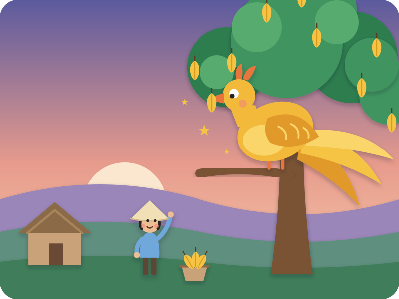
A folk tale from Vietnam
The Starfruit Tree · Cây Khế
"Story, story — are your ears open?" Kai: "Open!"
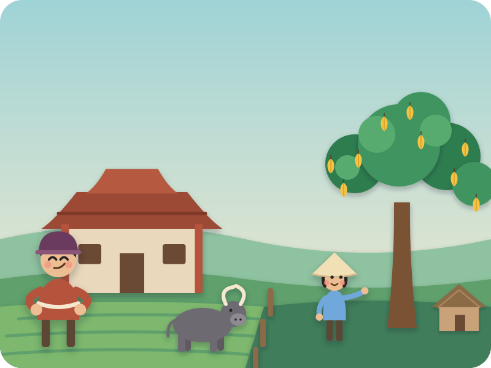
Once upon a time, in a little village by the sea in Vietnam, there lived two brothers.
Big Brother took the big house, the rice fields and the water buffalo. Little Brother got one old starfruit tree and a tiny hut.
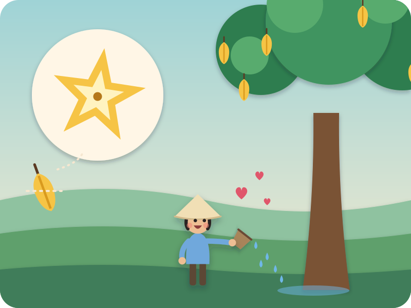
Little Brother loved that tree. He watered it, and talked to it, and pulled the weeds away.
And do you know the secret of a starfruit? Cut it into slices, and every slice is a star! ⭐
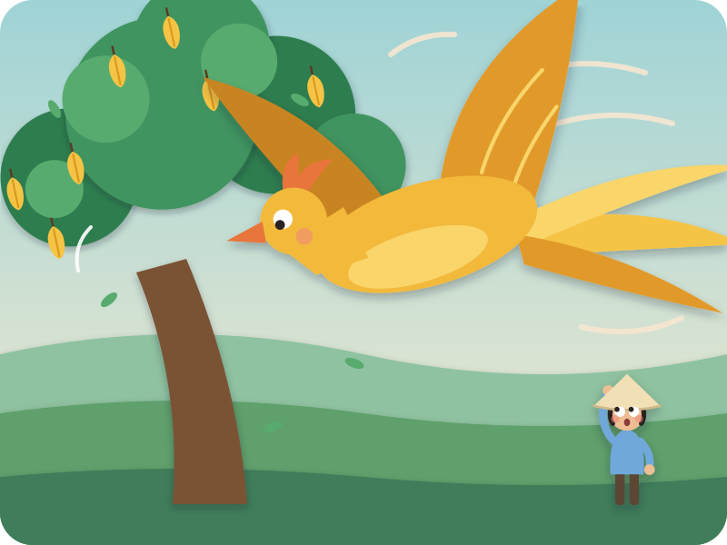
One morning — whoosh… whoosh… whoosh… Kai flaps big slow wings
Down came a giant golden bird, as big as a boat! The tree went creeeak — and the bird began to eat the starfruit. Gobble, gobble, gobble.
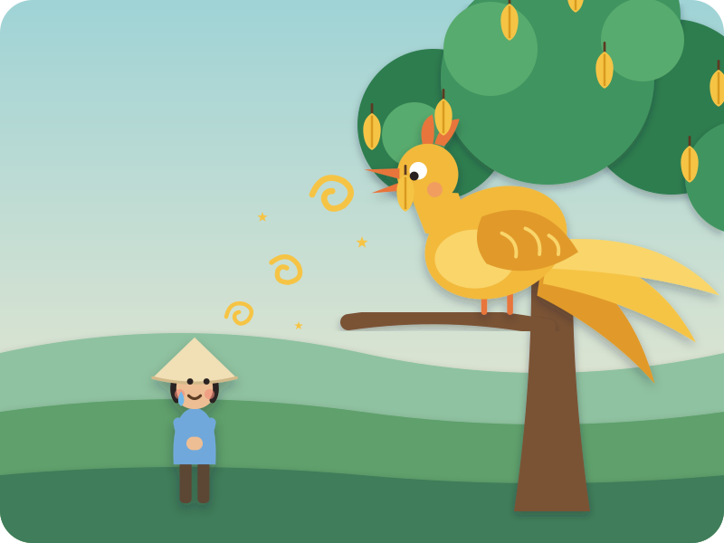
"Oh, golden bird," said Little Brother, "that tree is all I have."
The bird looked at him with kind, shining eyes, and sang:
"Eat one fruit, I pay in gold — three hands long, your bag to hold!" say it again, slowly, so Kai can join in
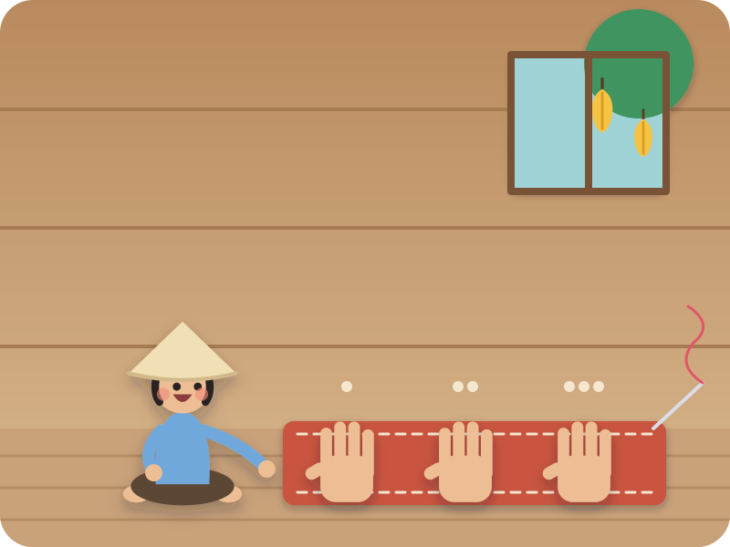
Three hands long — that's not very big. One hand, two hands, three hands. Kai measures it on his lap
So Little Brother sewed a little cloth bag, exactly three hands long.
"Ăn một quả, trả cục vàng — may túi ba gang, mang đi mà đựng."
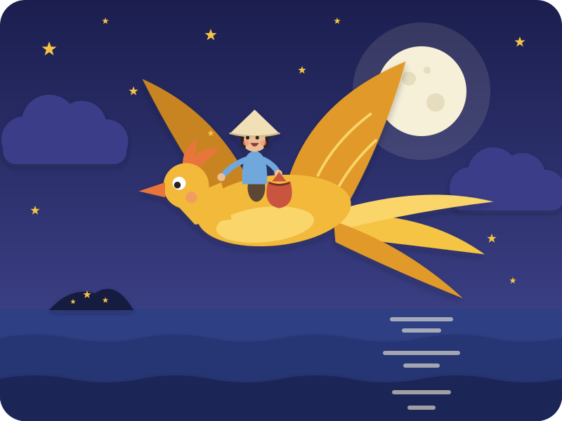
Early, early in the morning, Little Brother climbed onto the bird's soft golden back — and up they flew, over the sleeping village and out over the sea.
Flap… flap… flap… The moon made a silver path on the water.
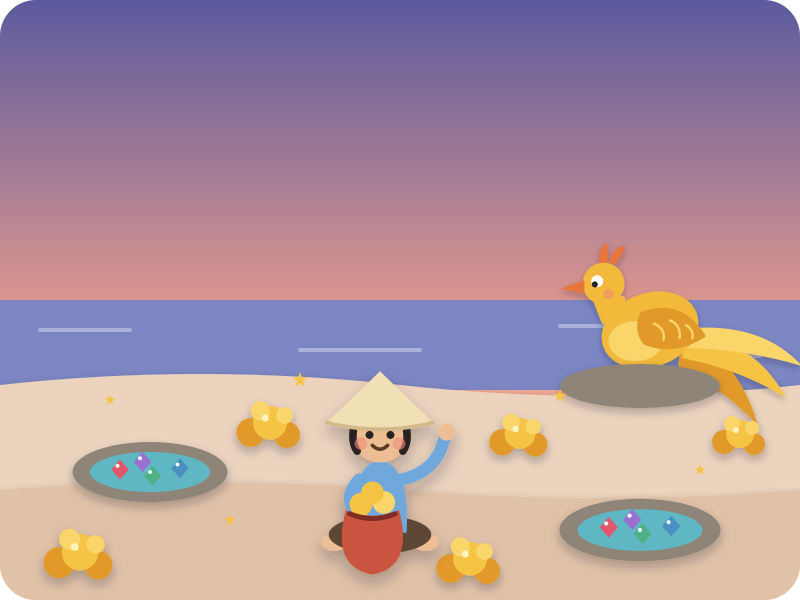
They came to a little island, and it was sparkling — golden stones on the sand, jewels in the rock pools, red and green and blue.
Little Brother filled his little bag… and stopped. One bag. That was enough.
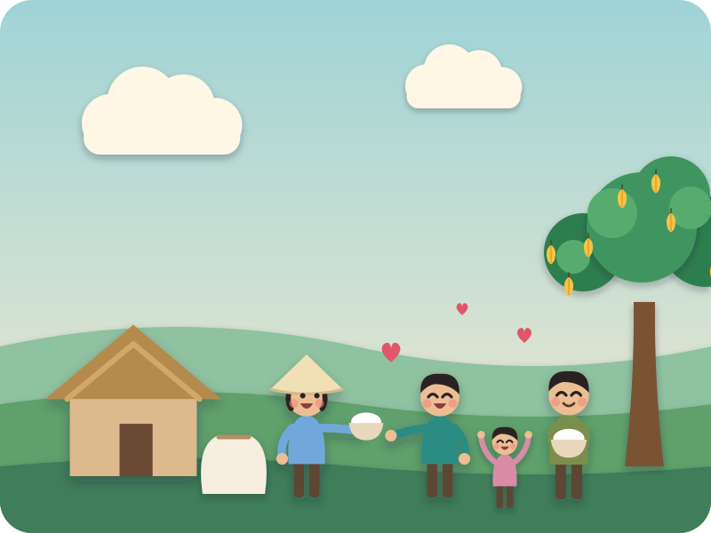
Home they flew. With his little bag of gold, Little Brother mended his hut, bought rice — and gave rice to everyone in the village who was hungry.
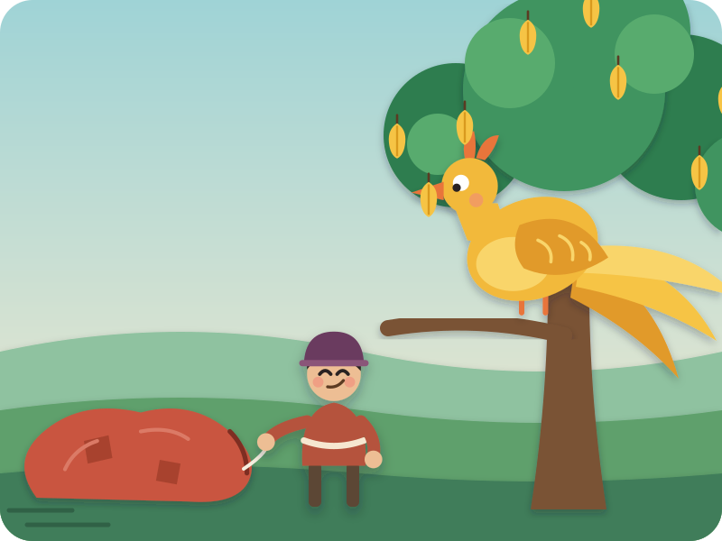
Big Brother heard all about it. "I want that tree!" So they swapped — Little Brother got the big house, and Big Brother got the starfruit tree.
When the bird sang its song, Big Brother said "Pfff!" — and sewed a bag ten hands long.
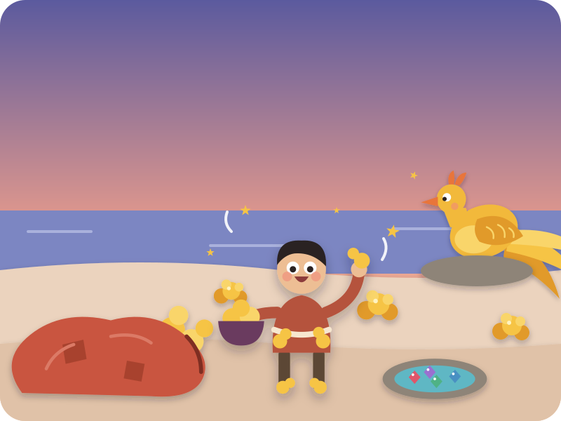
On the sparkling island, Big Brother grabbed. He filled the giant bag. Then his pockets. Then his hat. Then his shoes!
"More! More! More!"
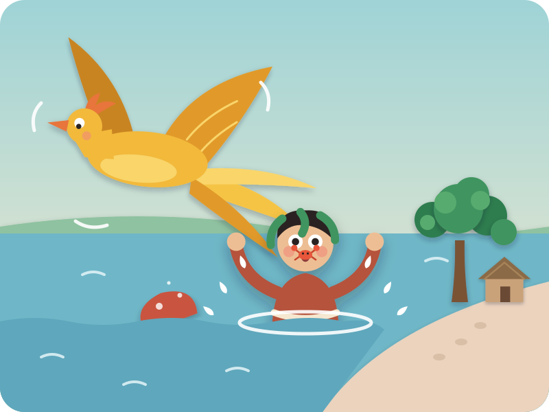
So heavy! The bird wobbled this way… Kai leans left and that way… Kai leans right lower and lower, by the beach. "Let go of the bag!"
"Never!" — SPLASH! Into the warm, shallow water he plopped, with a little crab on his nose. pinch-pinch!
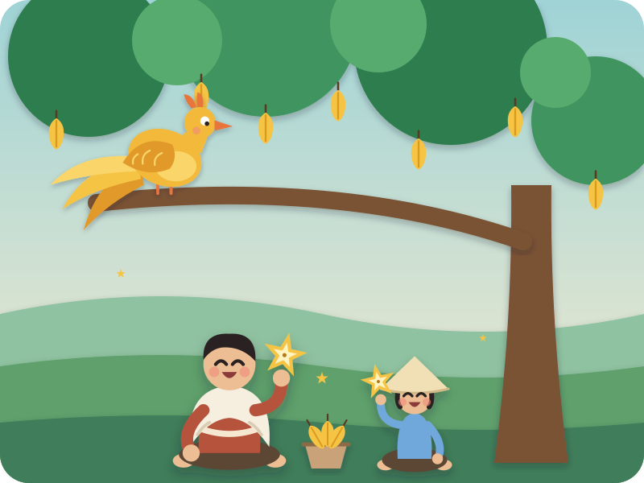
Big Brother waded home, dripping. Little Brother didn't laugh. He wrapped him in a towel, cut a starfruit — and every slice was a star.
"One for you, and one for me." "Thank you," said Big Brother. "Sharing is better than grabbing."
The End
"Snip, snap, snout — this tale's told out."
Swipe back to read it again
Driving? Tell it without the page · six beats
The picture book is for home, bedtime, or a passenger. In the car, tell it from memory — bold is Kai's part.
- Big Brother keeps the big house and the fields. Little Brother gets just one starfruit tree — and he loves it.
- A giant golden bird eats the starfruit. Little Brother is sad, and the bird says: "Eat one fruit, I pay in gold — three hands long, your bag to hold!"
- Little Brother sews a small bag. The bird flies him over the moonlit sea to a golden island — flap, flap, flap! He fills his small bag and flies home.
- Big Brother swaps houses to get the tree, and sews a GIANT bag — ten hands long — and stuffs it until it bulges.
- So heavy! The bird wobbles and dips low; the bag slips — splash! — and Big Brother plops into the warm, shallow water by the shore and wades home, dripping.
- Little Brother gives him a towel and a starfruit. They share — and every slice is a star.
After the story · car-friendly wondering
"How long was Little Brother's bag? Show me with your hands!"
"Why did the bird fly so low with Big Brother?"
"Shall we cut a starfruit after school and find the stars?" — a lovely way to close the loop at home.
Where this story comes from
Cây Khế is one of Vietnam's best-loved folk tales, and every Vietnamese child knows the bird's rhyme: "Ăn một quả, trả cục vàng, may túi ba gang, mang đi mà đựng" — "eat one fruit, pay a lump of gold; sew a bag three gang long to carry it" (a gang is a hand-span). In the traditional ending the greedy brother falls into the deep sea and is lost. This retelling is our own, for a 4-year-old: the bird stays kind, the water is shallow and warm, and the brothers end up sharing.